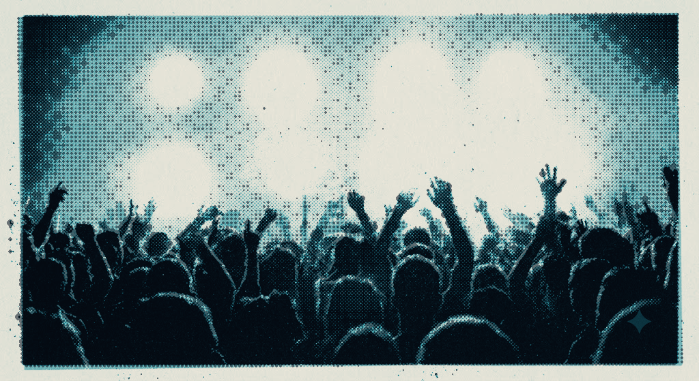

iOS / iPhone + iPad / JLT-4G
8 voices, each with its own step sequencer. 4 instrument engines. Patterns up to 64 steps. Any voice plays any instrument on any step — tracker semantics, on a grid you hit with your thumbs.
Free-form.
Any instrument, on any of 64 steps.
Multitimbral.
8 voices, 8 step sequencers.
Processed.
11 inserts, 4 sends, any order.
Automated.
3 modulation layers, any parameter.
FIG 01One voice’s lane — sixteen steps as two rows of eight, the way the app draws it. Every step stores its own instrument. Four cells enlarged.
Most grooveboxes bind an instrument to a track and leave it there. Jolt stores it on the step — a kick on step 1, a repitched sample on step 7, a wavetable chord on step 11, all on one lane. The first pattern takes a minute. The ceiling is somewhere past where most people stop looking.
FIG 02Pattern editor, iPhone, cropped to the step region. Two rows of eight, four pages. Each step carries its own instrument icon in its own colour; ratchets and slice letters ride on the step.
Why one lane, and not eight.
An all-at-once view of every voice was built, and then removed. Once songs got complex it stopped being followable. The editor shows one lane, sixteen steps at a time, with the instrument palette underneath. Legibility won.
A kit is not something you commit to at the start. Every engine carries its own insert chain, its own LFO and its own send levels.
Wavetable oscillator with four modes: spread, 2-op FM, paraphony and in-scale chords.
Sixteen sub-synths based on a classic Eurorack module.
Pitched or slicing. Old-skool repitching, per-step reversing, mic recording, mp3 and wav.
x0x-style percussion synthesis for hi-hats, snares and heavy kicks.
FIG 03Engine panels — three parameters shown of each. All of them are automatable.
Eleven insert effects sit per instrument, chained however you build them — ladder filter, gater and bitcrush among them. Four sends run underneath. Three layers of modulation reach all of it.
FIG 04Signal path. Modulation is drawn dashed because it crosses the chain rather than sitting in it.

Plate 01 / Performance mode
Live parameter control while the sequencer runs, and up to five global macros over the whole mix. Beat repeat and the two resonant DJ filters are among what you can put on them.
Browser demo
A slice of the engine runs on this page: the real DSP, compiled to WebAssembly, behind a simple sequencer. It is not the app — it is the part of it that makes the noise.
FIG 05Demo sequencer — one lane, sixteen steps, one browser tab.
Jolt Groovebox / iOS / JLT-4G
Fun in a minute. Deep enough that the minute never turns out to be the ceiling.